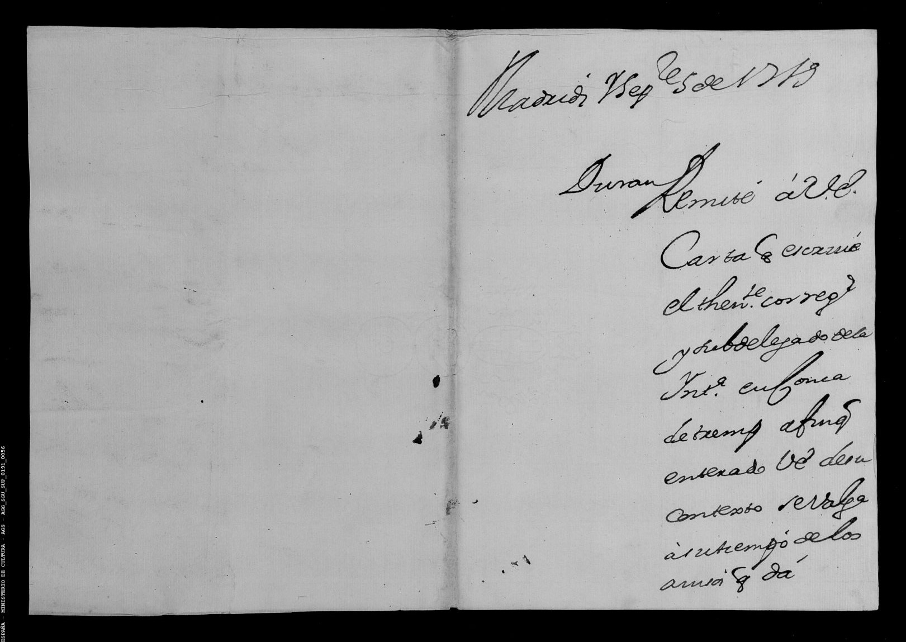
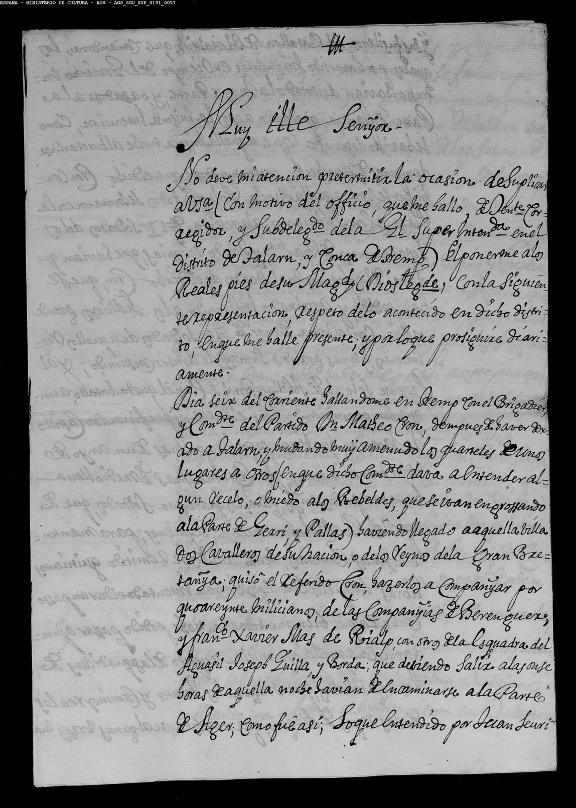
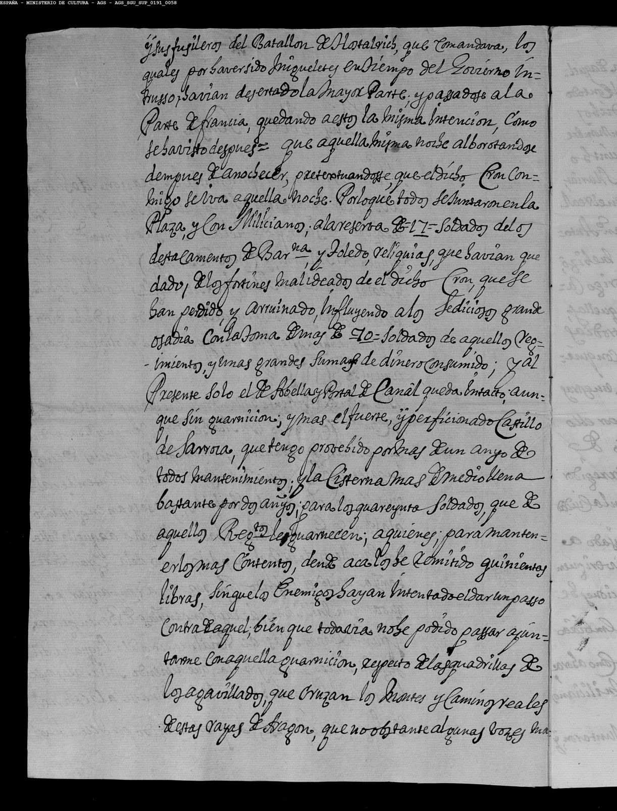
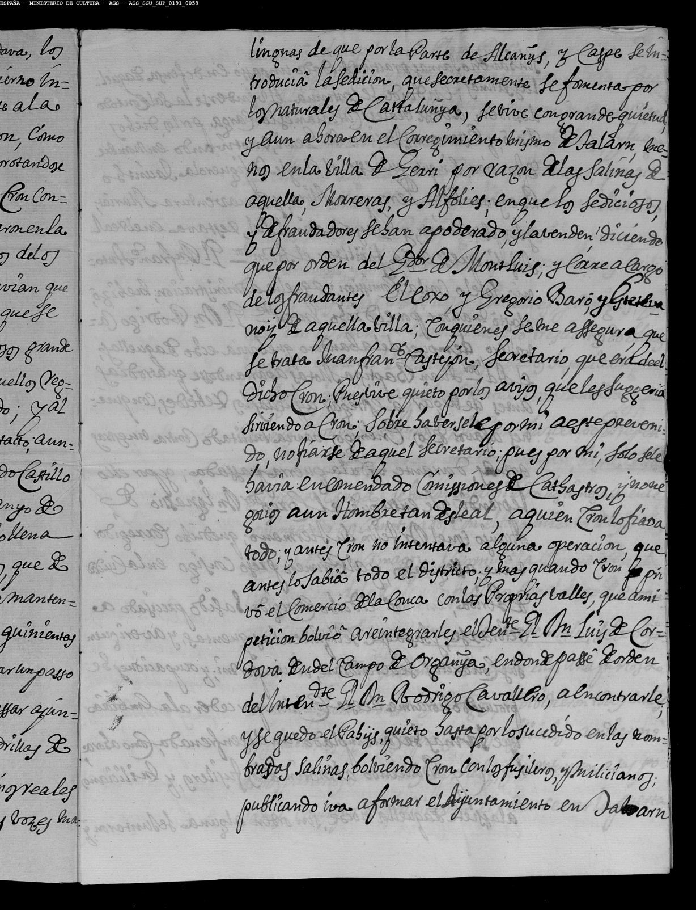
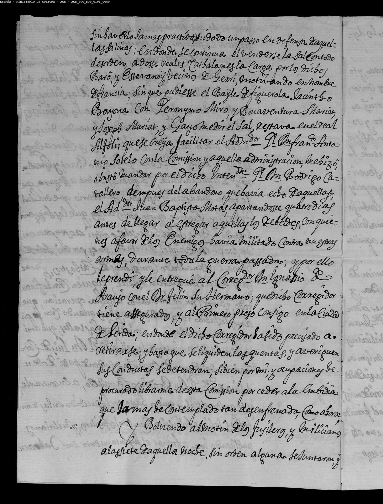
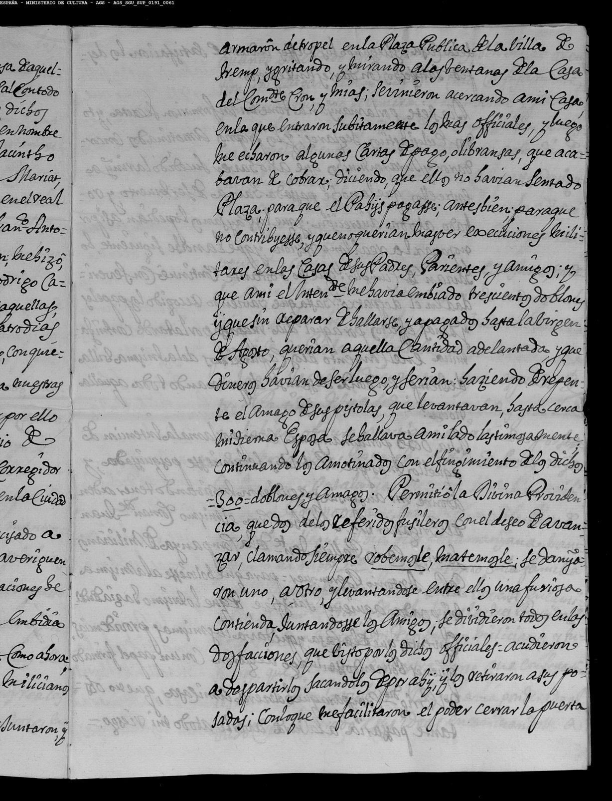
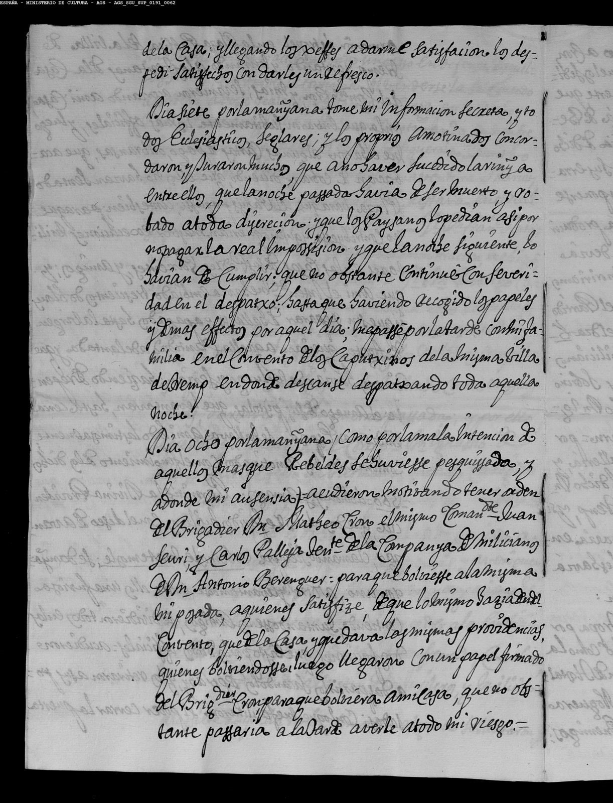
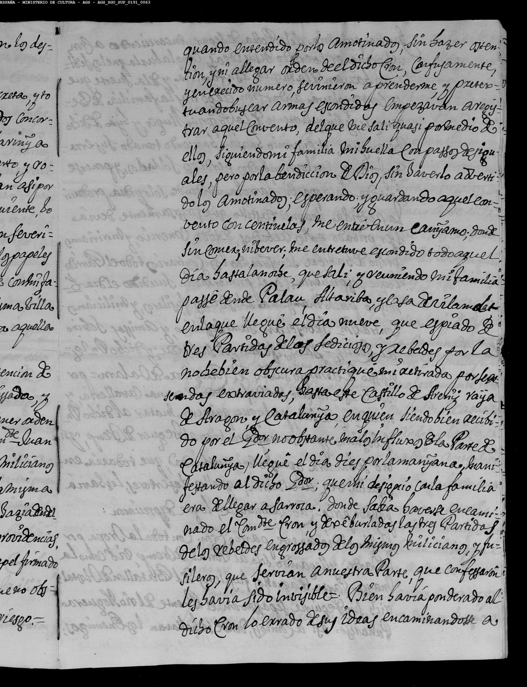
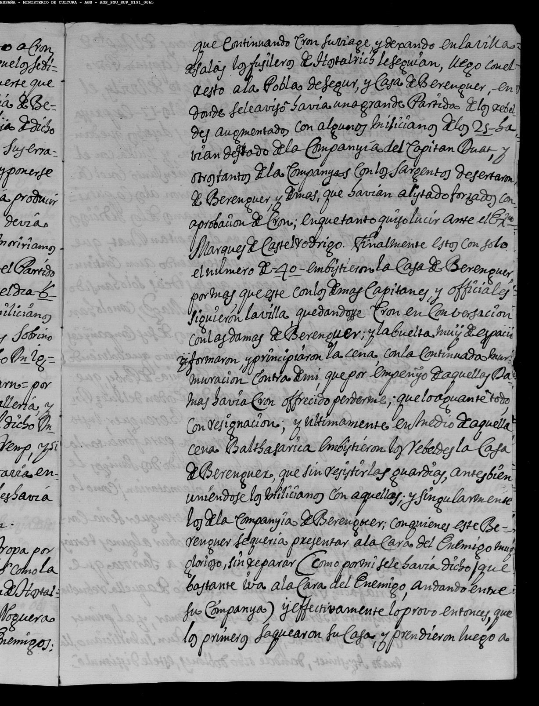
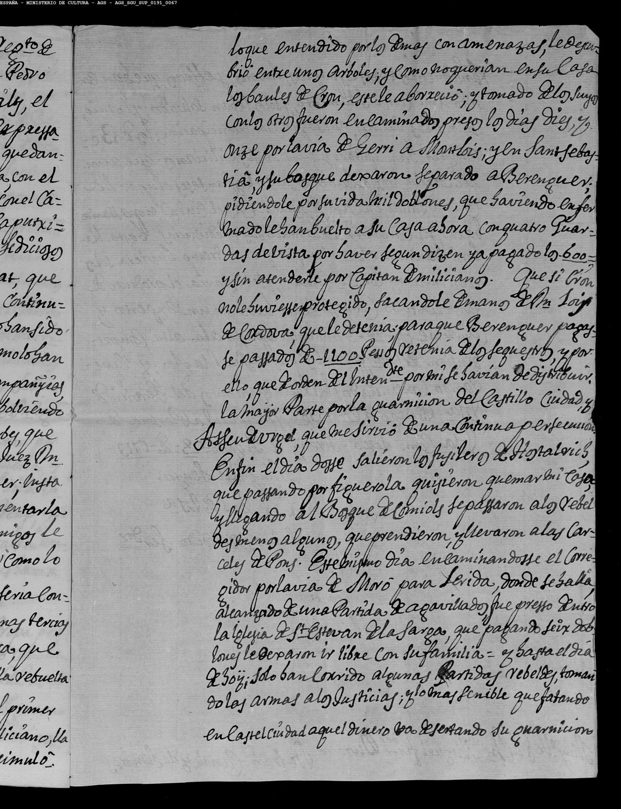

Les conseqüències del decret de Nova Planda:
La tardor de 1712 Tremp havia estat ocupada definitivament per les tropes borbòniques i l'hivern de 1713 ja estaven allotjades a la vila. Aquell mateix any hi va haver una epidèmia que va matar 70 soldats i cal suposar que també trempolins, tot i que el nombre de morts civils no consta en cap documentació. Uns mesos després Felip V de Borbó implantà el decret de nova planta a tot el territori català. Algunes de les formes de repressió que aquest va portar va ser la desaparició dels veguers, la creació dels corregiments i l'elecció de Talarn com a nova capital del corregiment. A més a més es varen perseguir i cremar llibres, es va prohibir tenir armes a les cases i fins i tot els ganivets havien de ser sense punta. Un dels executats per contravenir aquesta ordre va ser el veí Miquel Carreras l'agost de 1716.
L'any 1717 va sortir un gran exèrcit de Barcelona amb 8.000 homes amb l'objectiu d'ocupar tota Catalunya. L'estiu de l'any 1718 es van enviar des de Barcelona 30.000 soldats a Sicília amb l'objectiu de reconquerir part de l'antiga corona d'Aragó. La terra no estava tranquil·laja que es movien grups de guerrillers austriacistes. Abans de la guerra ja s'havia penjat a la Conca de Tremp un bandoler de la zona, Andreu Llop, ja que a casa seva s'havia trobat motlles per a fer bales. Llop era a més a més còmplice de Llorens Carrera, penjat a Balaguer on el Seu cap era exposat de la mateixa manera que ho seria el de Llop. El gener de 1719 el duc de Brewick, al servei de França, va envair Catalunya. Brewick va entrar en contacte amb els guerrillers austriacistes als que va prometre armes i diners però Carrasclet, tot i que va acceptar l'ajuda, no va voler posar els seus homes sota el control dels comandaments francesos com pretenia el duc.
A la Conca de Tremp, la protecció militar del corregiment estava sota el comandament del brigader Mateo Cron, un militar irlandès. Bona part de les tropes que tenia Cron eren catalanes i comptava amb fusellers d'Hostalric, on s'havien aplegat homes d'orígens diversos, i 100 soldats del regiment de Barcelona. En teoria aquests soldats eren voluntaris, però tan sols en teoria. La situació era cada cop més tensa, els oficials borbònics no es refiaven de la població civil. En una Carta José Ibáñez, cap militar de la Seu d'Urgell deia: "Yo veo tan encendido el fuego de la sedición que pide breve remedio, por lo que la antigua experiencia nos ha manifestado no ser estos naturales capazes de caer en la cuenta de sus detestables errores". Un altre fet que feia desconfiar de la població de Catalunya a les tropes borbòniques eren les constants desercions entre les tropes catalanes al servei de Felip V.
El 6 d'agost del 1719 comença la revolta dels soldats catalans. Un dels implicats era el mateix secretari de Cron, Juan Francisco Castejón, que tenia interessos en l'explotació de les mines de Gerri que estaven ja en mans dels francesos I els guerrillers. A les 19:00h es van concentrar davant la casa de Cron, tot i això es va acabar entrant a la casa de Francesc Canal I Amorís, que havia estat el darrer veguer del Pallars i que era sotsdelegat de la intendència de Tremp, la qual cobraca els impostos. El mateix Canal escriu, en castellà, "me hecharon algunas cartas de pago o libranzas que acababan de cobrar, diciendo que ellos no jabían sentado plaza para que el país pagase, antes bien, para que no contribuyese, y que no querían ver más ejecuciones militares en las casas de sus padres, parientes y amigos." S'exigia a Canal que donés més de 300 doblons que tenia per pagar tropes. Els popis amotinas es van barallar entre ells sobre si matar Canal o no i aquest va aprofitar la confusió per amagar-se al convent dels Caputxins i l'endemà ca poder fugir cap al Castell d'Areny.
El 7 d'agost, els guerrillers tornaren a publicar les Constitucions de Catalunya, derogant el decret de Nova Planta i van reinstaurar la insaculació per triar els càrrecs municipals a la Conca de Tremp. Aquest moviment es va estendre com la pólvora a altres poblacions com Olot, Ripoll, Camprodon, Puigcerdà, la Pobla de Segur i la Seu d'Urgell. En aquell moment totes les forces guerrilleres anaven anunciant que Catalunya seria per Carles i es guanyava la guerra.
El 10 d'agost Carrasclet va detenir Cron i el va lliurar als francesos. Carrasclet escriu "Los sediciosos del mismo país y las tropas que estaban sirviendo a mis órdenes, después de pillar y repartir entre ellos ropa, caballos y dinero en valor de más de mil doblones, me llevaron preso a Francia con la mayor infamia". Davant aquesta situació el corregidor de Talarn, en aquell moment Ignacio de Araujo, va fugir a Lleida. Més endavant, el 8 de desembre del 1719 escrivia "haverme retirado a esta ciudad del corregimiento de Talarn que S.M. (que Dios guarde) fue servido conferirme siendo la causa los miquelets de Francia i sediciosos del país."
Tot plegat, pels borbònics va arribar a ser tan complicat que es va planejar una defensa exclusivament de les grans cies de comunicació, ja que eren atacades constantment pels guerrillers. A la zona de Tremp, el mariscal de camp Luís Fernández de Córdova, amb només 1.200 homes, insistia a defensar tan sols la via de Lleida. Àger va ser ocupat el 24 d'agost pel Guerriller Claveguera, amenaçant així Balaguer i la via cap a Aragó. Desafortunadament va ser recuperat poques setmanes després.
En tota la revolta cal mencionar que el principal suport que rebien aquestes partides, com la de Carrasclet, era suport logístic rebut dels francesos I es tractava de queviures I munició. En aquest sentit Tremp va ser fonamental, ja que es va convertir en la plaça central de Blat de la resistència gràcies al fet que els borbònics en tenien molt de guardat.
Finalment el mes de desembre del 1719, Felip V renuncia a Sicília i Sardenya i reconeix la seva derrota. Pels volts de Nadal els francesos es retiraren definitivament, de Tremp i la conca, cap a la Cerdanya i la Seu d'Urgell, fins que el gener del 1720 abandonaven definitivament el Principat.
A hores d'ara no sabem del cert Quan Tremp va tornar a l'obediència de Felip V ni les represalies que hi va haver.
Carta de Fracisco Canal i de Amorós".
Arxiu original provinent del "Archivo General de Simancas".









